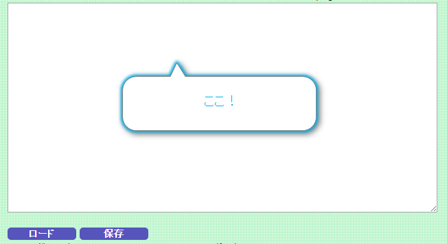

★エンコードのやり方
テキストに書いたスクリプトは、『エンコード』をしてはじめて完成します。
エンコードとは、書いたスクリプトを「ノベルゲームを作ろう」で使えるテキストの形に整えることです。
やりかた
■エンコーダーの説明
０．パソコン上（ローカル）で変換を行うとき、InternetExplorerを使うと以下のようなボックスが現れます。
ブロックされたコンテンツを許可してください。
FirefoxやGoogle Chromeをお使いの場合はでてきません。

１．上のテキストエリアに、あなたの書いたシナリオを貼り付けてください。
２．補助欄に、一括変換したい文字列があったら記載してください。（不要の場合は空欄で大丈夫です）
主に画像や音楽のパスを一括変更するために使用します。複数有る場合は、改行して複数行で書いてください。
（例）
佳奈多絵０１>data/char/little/05_hutaki_kanata01.png
佳奈多絵０２>data/char/little/05_hutaki_kanata02.png
例えば
『■キャラ、中央、フェード、佳奈多絵０１』
という場所は、
『■キャラ、中央、フェード、data/char/little/05_hutaki_kanata01.png』
に変換されます。
「ロード」ボタンでは保存した補助の内容をロードすることができます。

３．変換ボタンを押してください。
押しますと変換が開始されます。
４．ダイアログがでますので、ＯＫを押してください。

５．エラーが出ていたら確認！
その時はエラー内容を確認してください。
例えば以下の場合は
『３０行目、２２行目、７３行目で指定しているファイルがありませんよ』
よく見ると、「png」と描かなければいけないところを、うっかり「pnggg」と書いてしまったようです。
もう一つ例としては、以下の場合です。
6行目で『背景コマンドエラー』が発生しています。
なので書いたスクリプトの６行目を見ると……
「■背景、学校１」
となっていました。
背景コマンドは「■背景、表示方法、画像」でなければなりません。
エラーが出たら、確認して直しましょう。
６．変換結果が表示されますので、エラーが無ければそれを全てコピーしてください。
７．メモ帳か何かでファイルを作って、それに５．でコピーした変換結果を貼り付けてください。
（または直接story.jsの中身に貼り付けてください）

８．ファイル名を「story.js」に変更してください。

９．index.htmlと同じ場所にstory.jsをおいて完成です。
雑談 エンコーダーで何を処理しているかを書いておきます。 エンコーダーでは、書いたスクリプトをfile_dataという配列変数に代入しています。 簡単に言うと、最初の行にvar file_data=new Array(を追加して、全ての行の最初と最後を''でくくっているだけです（笑） javascriptを知っている人はstory.jsを見るのが手っ取り早いかと思います。 story.jsはindex.htmlで読み込んでいます。 ここのstory.js部分を変更すれば別の名前などに設定できます。